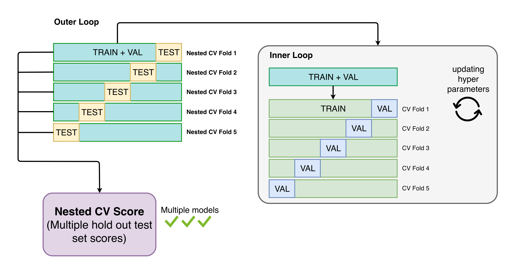

Advanced Usage¶
Running a benchmark¶
Introduction to benchmarking
Automatminer can be used for benchmarking ML performance on materials problems in a standardized fashion. A common example use case is comparing one published method to another; another use is getting a rough idea how an Automatminer model will generalize to making “real” predictions. To mitigate unfair model advantages from biased splits or hyperparameter tuning, Automatminer uses nested cross validation with identical outer splits for benchmarking:
{kind=link}
Nested CV is analagous to using multiple hold-out test sets.
Note: Nested CV is a computationally expensive benchmarking procedure!
Usage
MatPipe has a benchmark method which can be used for
automatically benchmarking a pipeline on a dataset. Once you have your
data loaded in a dataframe, the procedure is:
Define a k-fold cross validation scheme (to use as outer test folds).
2. Use the benchmark method of MatPipe to get predictions for
each outer fold
Use your scoring function of choice to evaluate each fold.
from sklearn.model_evaluation import KFold
# We recommend KFold for regression problems and StratifiedKFold
# for classification
kf = KFold(n_splits=5, shuffle=True)
from automatminer.pipeline import MatPipe
pipe = MatPipe.from_preset("express")
predicted_folds = pipe.benchmark(my_df, "my_property", kf)
benchmark returns a list of the predicted test folds (i.e., your
entire dataset as if it were test folds). These test folds can then be used
to get estimates of error, compare to other pipelines, etc.
Matbench
Matminer provides access to the MatBench benchmark suite, a curated set of 13 diverse materials ML problems which work in Automatminer benchmarks. Learn more here: MatBench
Time Savers and Practical Tools¶
Using user-defined features
Often, there will be important features associated with your data which automatminer has not implemented. To use your own features for learning, simply:
include them in both your training and prediction dataframes
2. do not name the columns the same as AutoFeaturizer inputs (by default, “structure”, “composition”, “bandstructure”, and “dos”).
Thats it! Your features have been included in the pipeline, although depending on the pipeline configuration (such as feature reduction), the features may be dropped if needed. If you want to ensure your features are used for learning, see the section on customizing pipelines.
Ignoring columns
During prediction, MatPipe automatically handles dropping problematic columns
and materials inputs (e.g., structures) for inputs to ML. If you want to keep
columns in your predictions and prevent them from being used for learning,
specify the ignore argument to predict.
Let’s say this is the dataframe you’d like to predict on:
test_df
|
|
|---|---|
|
|
|
|
|
|
… |
… |
In this example, we want to keep the material-id column for identifying
our predicted samples and we don’t want to use it as a learning feature. This
is the intended use case for ignore.
Assuming you’ve already fit a MatPipe, specify you’d like to ignore:
predicted_folds = pipe.predict(test_df, ignore=["material-id"])
Your output will look like this:
structure
material-id…
my_property predicted
<structure object>
m-12345…
0.449
<structure object>
m-5983…
-0.573
<structure object>
m-029393…
-0.005
…
…
…
Warning
Ignoring columns in MatPipe supercedes all inner operations. If inner operations require a feature ignored in the MatPipe predict, the pipeline will fail.